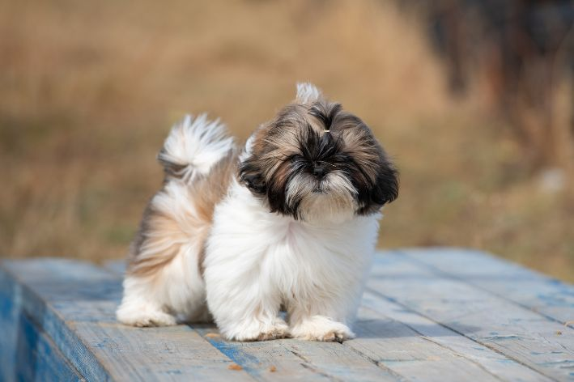

Chalana
Chalana é uma alegria ambulante, repleta de entusiasmo e afeto. Este Labrador Retriever possui uma personalidade extrovertida e amigável que ilumina qualquer ambiente.

Oscar
Oscar é um vira-lata cheio de energia e entusiasmo. Ele é muito inteligente e aprende truques com facilidade. Com sua natureza amigável, Max se dá bem com crianças e outros animais de estimação. Um companheiro leal para aventuras diárias

Luna
Luna é uma Shih Tzu doce e tranquila em busca de um lar acolhedor. Ela adora carinho e está sempre pronta para se aninhar no sofá. Sua pelagem fofa requer um pouco de cuidado, mas seu amor incondicional faz dela uma adição encantadora para qualquer lar calmo e afetuoso.